Capital, deals and industry structure, with every number sourced.
 Oklo Posts First Revenue of $1.86M as Q3 Loss Widens to $41.7M, Liquidity Hits $3.13BOklo posted its first revenue of $1.86 million in the third quarter of 2026, from services at the ARMEC and CEI businesses acquired in June, while the net loss widened 40.5% to $41.75 million, or $0.22 per share, narrower than the roughly $0.24 to $0.27 loss analysts expected. Liquidity reached $3.13 billion after the company issued 32.6 million shares for $2.25 billion in net proceeds in the first nine months. The Groves Isotope Test Reactor achieved first criticality in August 2026, the DOE approved the Aurora-ID safety analysis in June, and the 12 GW Switch master power agreement and Meta prepayment framework stand behind the 2028-2029 deployment targets.
Oklo Posts First Revenue of $1.86M as Q3 Loss Widens to $41.7M, Liquidity Hits $3.13BOklo posted its first revenue of $1.86 million in the third quarter of 2026, from services at the ARMEC and CEI businesses acquired in June, while the net loss widened 40.5% to $41.75 million, or $0.22 per share, narrower than the roughly $0.24 to $0.27 loss analysts expected. Liquidity reached $3.13 billion after the company issued 32.6 million shares for $2.25 billion in net proceeds in the first nine months. The Groves Isotope Test Reactor achieved first criticality in August 2026, the DOE approved the Aurora-ID safety analysis in June, and the 12 GW Switch master power agreement and Meta prepayment framework stand behind the 2028-2029 deployment targets. Moderna Swings to $162M Profit as Q3 Revenue Hits $1.31B, Crushing EstimatesModerna reported third-quarter 2026 revenue of $1.31 billion, up 29% year over year and far above the $885.1 million analysts expected, swinging to net income of $162 million, or $0.38 per share, against a $200 million loss a year earlier. The company raised full-year 2026 revenue growth guidance to 15% to 25% from up to 10% and lifted its year-end cash outlook to $8.1 billion to $8.3 billion. The FDA-approved flu vaccine mFLUSIVA and the Phase 3 melanoma vaccine intismeran autogene, which cut recurrence-or-death risk by 42%, are the pipeline drivers ahead.Monster Q3 Sales Hit a Record $2.56B on International Growth, but Margins Squeeze SharesMonster Beverage reported third-quarter 2026 net sales of $2.563 billion, up 16.7% year over year to a record, beating the roughly $2.49 billion analysts expected, according to reports on the company's results released after the market close on November 5, 2026. Net income rose 8.4% to $568.4 million, diluted earnings were $0.29 per share, and adjusted earnings of $0.30 matched consensus. International sales rose 28.1% to $1.20 billion, or 47% of total revenue, with Latin America up 49%. Gross margin slipped to 54.7% from 55.7%, and shares fell 6.2% in after-hours trading.BILL Q1 Profit Beats, but an Accounting Change Makes Revenue Look Like a MissBILL Holdings reported fiscal first-quarter 2027 total revenue of $353.8 million, up 13% year over year, and core revenue of $316.4 million, up 14.3%, according to the company's official results released after the market close on November 5, 2026. Non-GAAP earnings were $1.18 per share, beating the $0.98 consensus, and GAAP net income was $60.3 million versus a $3.0 million loss a year earlier. The apparent revenue miss against the $438.7 million consensus is an accounting-presentation artifact: card rewards are now recorded as a reduction of revenue. Management raised full-year profit guidance, with non-GAAP operating income now expected at $466 million to $486 million.
Moderna Swings to $162M Profit as Q3 Revenue Hits $1.31B, Crushing EstimatesModerna reported third-quarter 2026 revenue of $1.31 billion, up 29% year over year and far above the $885.1 million analysts expected, swinging to net income of $162 million, or $0.38 per share, against a $200 million loss a year earlier. The company raised full-year 2026 revenue growth guidance to 15% to 25% from up to 10% and lifted its year-end cash outlook to $8.1 billion to $8.3 billion. The FDA-approved flu vaccine mFLUSIVA and the Phase 3 melanoma vaccine intismeran autogene, which cut recurrence-or-death risk by 42%, are the pipeline drivers ahead.Monster Q3 Sales Hit a Record $2.56B on International Growth, but Margins Squeeze SharesMonster Beverage reported third-quarter 2026 net sales of $2.563 billion, up 16.7% year over year to a record, beating the roughly $2.49 billion analysts expected, according to reports on the company's results released after the market close on November 5, 2026. Net income rose 8.4% to $568.4 million, diluted earnings were $0.29 per share, and adjusted earnings of $0.30 matched consensus. International sales rose 28.1% to $1.20 billion, or 47% of total revenue, with Latin America up 49%. Gross margin slipped to 54.7% from 55.7%, and shares fell 6.2% in after-hours trading.BILL Q1 Profit Beats, but an Accounting Change Makes Revenue Look Like a MissBILL Holdings reported fiscal first-quarter 2027 total revenue of $353.8 million, up 13% year over year, and core revenue of $316.4 million, up 14.3%, according to the company's official results released after the market close on November 5, 2026. Non-GAAP earnings were $1.18 per share, beating the $0.98 consensus, and GAAP net income was $60.3 million versus a $3.0 million loss a year earlier. The apparent revenue miss against the $438.7 million consensus is an accounting-presentation artifact: card rewards are now recorded as a reduction of revenue. Management raised full-year profit guidance, with non-GAAP operating income now expected at $466 million to $486 million.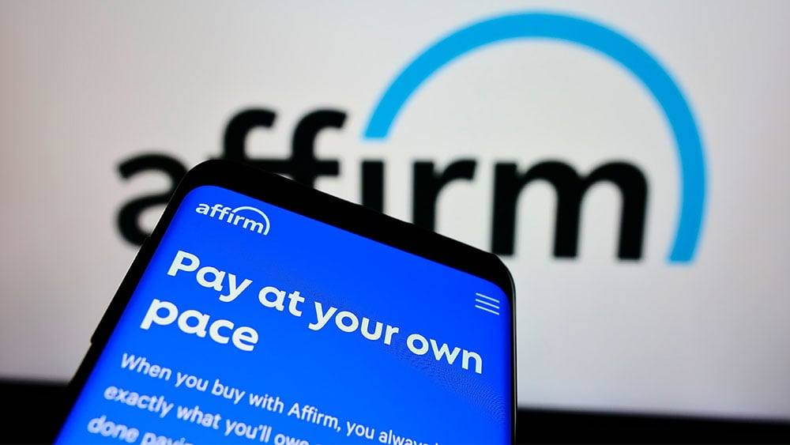
Affirm Q1 Revenue Jumps 35% to $1.26B, but Delinquencies Push Shares DownAffirm Holdings reported fiscal first-quarter 2027 revenue of $1.262 billion, up 35% year over year, beating the roughly $1.213 billion analysts expected, according to reports on the company's results released after the market close on November 5, 2026. Earnings were $0.47 per share, up 104% from a year earlier and above the $0.35 consensus, while gross merchandise volume rose 34% to $14.4 billion. Loans 30 or more days past due rose 35 basis points sequentially to 2.9%, and shares fell more than 9% in after-hours trading. The company forecast second-quarter gross merchandise volume of $17.9 billion to $18.2 billion, above estimates.DraftKings Q3 Loss Widens as It Slashes 2026 Outlook to Fund Prediction MarketsDraftKings reported third-quarter 2026 revenue of $1.329 billion, up 16% year over year but below the roughly $1.40 billion analysts expected, according to the company's official results release published through Business Wire on November 5, 2026. The net loss widened to $468.7 million, or $0.94 per share, and adjusted EBITDA swung to a loss of $316.9 million. The company cut its full-year 2026 adjusted EBITDA guidance to $175 million to $275 million, down from $700 million to $900 million, to fund a $650 million to $700 million push into prediction markets. Shares fell 24% in after-hours trading.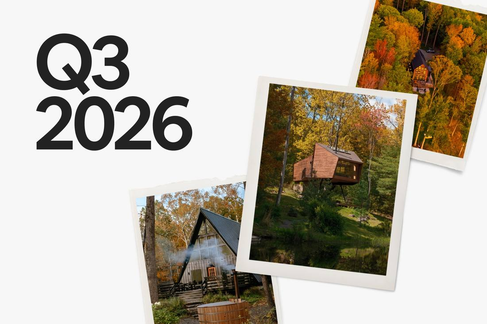
Airbnb Q3 Revenue Jumps 19% to $4.87B, Fastest Growth in Three YearsAirbnb reported third-quarter 2026 revenue of $4.87 billion, up 19% year over year, its fastest revenue growth in more than three years, beating the roughly $4.75 billion consensus, according to the company's official results published on November 5, 2026. Gross booking value grew 21% to $27.7 billion, nights and seats booked rose 16% to 155 million, and net income reached $1.9 billion. The company authorized a new $12 billion share repurchase and raised its full-year 2026 revenue growth outlook to the high teens. Shares jumped about 11% in after-hours trading, against a session in which the Nasdaq Composite fell 5.52%.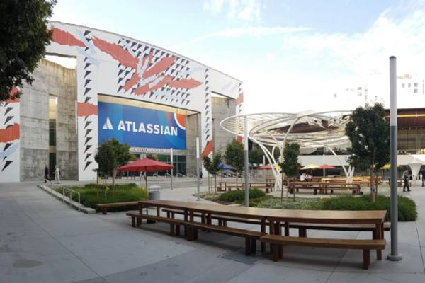
Atlassian Beats on Q1 Revenue, Shares Fall 17% on Slower Subscription OutlookAtlassian reported first-quarter fiscal 2027 revenue of $1,772 million, up 24% year over year, beating the $1.71 billion analysts expected, according to the company's official results release published through Business Wire on November 5, 2026. Cloud revenue rose 31% to $1,302 million and adjusted earnings per share were $1.65, above the $1.43 consensus. Shares fell more than 17% in after-hours trading as the company guided subscription annual recurring revenue growth to slow to about 18.5% by fiscal year-end.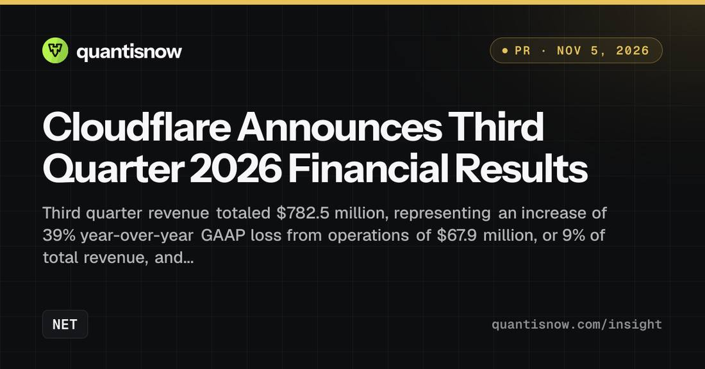
Cloudflare Q3 Revenue Jumps 39% to $782.5M, Fastest Growth in Four YearsCloudflare reported third-quarter 2026 revenue of $782.5 million, up 39% year over year, its fastest growth in nearly four years, beating the roughly $737 million consensus, according to the company's official results release published through Business Wire on November 5, 2026. Non-GAAP earnings were $0.38 per share, the company crossed $3 billion in annualized revenue, and it guided fourth-quarter revenue to $845 million to $846 million. Shares surged about 17% in after-hours trading, against a session in which the Nasdaq Composite fell 5.52%. Anthropic IPO Roadshow in Doubt as Investors Balk at $1.5T ValuationReuters reported on November 5, 2026 that potential investors in Anthropic's IPO are raising doubts about whether the company can proceed with its planned roadshow next week in time for a November listing, with some viewing the recently discussed $1.5 trillion valuation as the high end of expectations. The Wall Street Journal separately reported investor skepticism on the $1.5 trillion figure. The roadshow was expected to kick off the week of November 9, and Anthropic declined to comment.MARKETS & INDUSTRYAOSL Q1 Revenue $177.8M as AI Server Sales Surge 250%Alpha and Omega Semiconductor reported fiscal first-quarter 2027 revenue of $177.8 million on November 5, 2026, up 4.3% sequentially, with GAAP net loss per share of $0.20. AI and Server revenue grew more than 65% sequentially and 250% year over year to over 20% of total revenue, lifting gross margin to 24.5%. The company guided fiscal second-quarter revenue to approximately $180 million. Shares fell 12.7% in the regular session, before the results were released after the close.
Anthropic IPO Roadshow in Doubt as Investors Balk at $1.5T ValuationReuters reported on November 5, 2026 that potential investors in Anthropic's IPO are raising doubts about whether the company can proceed with its planned roadshow next week in time for a November listing, with some viewing the recently discussed $1.5 trillion valuation as the high end of expectations. The Wall Street Journal separately reported investor skepticism on the $1.5 trillion figure. The roadshow was expected to kick off the week of November 9, and Anthropic declined to comment.MARKETS & INDUSTRYAOSL Q1 Revenue $177.8M as AI Server Sales Surge 250%Alpha and Omega Semiconductor reported fiscal first-quarter 2027 revenue of $177.8 million on November 5, 2026, up 4.3% sequentially, with GAAP net loss per share of $0.20. AI and Server revenue grew more than 65% sequentially and 250% year over year to over 20% of total revenue, lifting gross margin to 24.5%. The company guided fiscal second-quarter revenue to approximately $180 million. Shares fell 12.7% in the regular session, before the results were released after the close. Arteris Q3 Revenue Jumps 48% to $25.8M, Beating EstimatesArteris reported third-quarter 2026 revenue of $25.77 million on November 5, 2026, up 48.1% year over year and above the $24.57 million consensus, with non-GAAP EPS of a $0.02 loss beating estimates. Annual Contract Value rose to $94.4 million, licensing revenue grew 41% and variable royalties 52%, while the GAAP net loss widened to $11.15 million. Shares fell 12.0% in the regular session, before the results were released after the close.
Arteris Q3 Revenue Jumps 48% to $25.8M, Beating EstimatesArteris reported third-quarter 2026 revenue of $25.77 million on November 5, 2026, up 48.1% year over year and above the $24.57 million consensus, with non-GAAP EPS of a $0.02 loss beating estimates. Annual Contract Value rose to $94.4 million, licensing revenue grew 41% and variable royalties 52%, while the GAAP net loss widened to $11.15 million. Shares fell 12.0% in the regular session, before the results were released after the close. Microchip Q2 Sales Jump 42% to $1.62B, Topping GuidanceMicrochip Technology reported second-quarter fiscal 2027 net sales of $1.622 billion on November 5, 2026, up 42.2% year over year and above the high end of guidance, with non-GAAP EPS of $0.97 beating the $0.94 consensus. The company guided December-quarter sales to down 3% to up 1% sequentially and flagged $53 million of one-time revenue that will not repeat, while PCIe Gen6 design wins doubled to 24. Shares fell 13.9% in the regular session, before the results were released after the close.
Microchip Q2 Sales Jump 42% to $1.62B, Topping GuidanceMicrochip Technology reported second-quarter fiscal 2027 net sales of $1.622 billion on November 5, 2026, up 42.2% year over year and above the high end of guidance, with non-GAAP EPS of $0.97 beating the $0.94 consensus. The company guided December-quarter sales to down 3% to up 1% sequentially and flagged $53 million of one-time revenue that will not repeat, while PCIe Gen6 design wins doubled to 24. Shares fell 13.9% in the regular session, before the results were released after the close. Synaptics Q1 Revenue Misses at $294M as Onsemi Deal Goes QuietSynaptics reported first-quarter fiscal 2027 revenue of $294.0 million on November 5, 2026, up 1% year over year but about 7% below the $315.56 million consensus, with non-GAAP net income of $51.5 million, or $1.26 per diluted share. The company introduced its Astra SR200 xMCU edge AI product line but gave no forward outlook and held no earnings call because of its pending all-cash acquisition by onsemi, restructured from all-stock on October 1, 2026. Shares fell 0.9% in the regular session.
Synaptics Q1 Revenue Misses at $294M as Onsemi Deal Goes QuietSynaptics reported first-quarter fiscal 2027 revenue of $294.0 million on November 5, 2026, up 1% year over year but about 7% below the $315.56 million consensus, with non-GAAP net income of $51.5 million, or $1.26 per diluted share. The company introduced its Astra SR200 xMCU edge AI product line but gave no forward outlook and held no earnings call because of its pending all-cash acquisition by onsemi, restructured from all-stock on October 1, 2026. Shares fell 0.9% in the regular session. IREN AI Cloud Revenue Nearly Triples to $200M as $4B Target Slips to 2027IREN reported fiscal first-quarter 2027 revenue of $228 million on November 5, 2026, up 66% sequentially, with AI cloud revenue nearly tripling to $200 million, up 182%, and adjusted EBITDA of $66 million. But the company pushed its target for more than $4 billion in contracted annualized run-rate revenue from the end of 2026 to January 31, 2027, possibly late February, and disclosed that $6 billion of its remaining $15 billion of fiscal 2027 capital spending depends on market conditions. Shares fell 17.0% in the regular session, then rebounded 9.6% after hours.MARKETS & INDUSTRYTeradata Q3 Revenue Falls 4% to $399M as Cloud ARR Grows 11%Teradata reported third-quarter 2026 revenue of $399 million on November 5, 2026, down 4% year over year but slightly above consensus, with public cloud ARR up 11% to $700 million and non-GAAP diluted EPS of $0.70 beating the $0.58 consensus. The company raised its full-year earnings guidance and narrowed its revenue outlook to the high end, while launching Teradata Factory, Tera Context Engine and Tera Harness as its agentic AI push. Shares fell 5.5% in the regular session.
IREN AI Cloud Revenue Nearly Triples to $200M as $4B Target Slips to 2027IREN reported fiscal first-quarter 2027 revenue of $228 million on November 5, 2026, up 66% sequentially, with AI cloud revenue nearly tripling to $200 million, up 182%, and adjusted EBITDA of $66 million. But the company pushed its target for more than $4 billion in contracted annualized run-rate revenue from the end of 2026 to January 31, 2027, possibly late February, and disclosed that $6 billion of its remaining $15 billion of fiscal 2027 capital spending depends on market conditions. Shares fell 17.0% in the regular session, then rebounded 9.6% after hours.MARKETS & INDUSTRYTeradata Q3 Revenue Falls 4% to $399M as Cloud ARR Grows 11%Teradata reported third-quarter 2026 revenue of $399 million on November 5, 2026, down 4% year over year but slightly above consensus, with public cloud ARR up 11% to $700 million and non-GAAP diluted EPS of $0.70 beating the $0.58 consensus. The company raised its full-year earnings guidance and narrowed its revenue outlook to the high end, while launching Teradata Factory, Tera Context Engine and Tera Harness as its agentic AI push. Shares fell 5.5% in the regular session. Innodata's AI Data Revenue Jumps 53% to a Record $95.6MInnodata reported record third-quarter 2026 revenue of $95.6 million, up 53% year over year and about 15% above analyst consensus, its 13th consecutive quarter of growth. Adjusted EBITDA was $17.7 million, net income rose 24% to $10.3 million, and full-year 2026 revenue growth guidance was raised to 42% or more. The company is pitching a new physical AI data business, with a motion capture lab launched in September and pilots under way with frontier and robotics labs; shares fell 10.8% despite the beat.
Innodata's AI Data Revenue Jumps 53% to a Record $95.6MInnodata reported record third-quarter 2026 revenue of $95.6 million, up 53% year over year and about 15% above analyst consensus, its 13th consecutive quarter of growth. Adjusted EBITDA was $17.7 million, net income rose 24% to $10.3 million, and full-year 2026 revenue growth guidance was raised to 42% or more. The company is pitching a new physical AI data business, with a motion capture lab launched in September and pilots under way with frontier and robotics labs; shares fell 10.8% despite the beat. SoundHound Posts Record Q3 Revenue of $62.4M, Guides to Profitability in Late 2027SoundHound AI reported record third-quarter 2026 revenue of $62.4 million, up 48.5% year over year, in its first quarter including LivePerson, acquired September 4, 2026. The GAAP net loss was $46.4 million and adjusted EBITDA was a loss of $20.7 million. The company guided full-year 2026 revenue to $250 million to $260 million and 2027 revenue to $350 million to $400 million, and said it expects sustained adjusted EBITDA profitability within the second half of 2027.
SoundHound Posts Record Q3 Revenue of $62.4M, Guides to Profitability in Late 2027SoundHound AI reported record third-quarter 2026 revenue of $62.4 million, up 48.5% year over year, in its first quarter including LivePerson, acquired September 4, 2026. The GAAP net loss was $46.4 million and adjusted EBITDA was a loss of $20.7 million. The company guided full-year 2026 revenue to $250 million to $260 million and 2027 revenue to $350 million to $400 million, and said it expects sustained adjusted EBITDA profitability within the second half of 2027.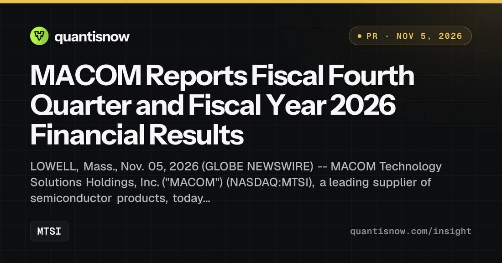
MACOM's Data-Center Quarter Jumps 63% as Optical Demand Lifts Margins and the GuideMACOM reported fiscal fourth-quarter 2026 revenue of $424.8 million, up 62.7% year over year and ahead of the roughly $420.35 million consensus, with adjusted earnings of $2.09 per diluted share against a $2.00 consensus. Adjusted gross margin widened to 61.3%, and the company guided first-quarter fiscal 2027 revenue to $450 million to $460 million with adjusted earnings of $2.21 to $2.29 per share.Core Scientific's Colocation Revenue Jumps 58% as the Miner Turn Becomes an AI LandlordCore Scientific reported third-quarter 2026 revenue of $232.9 million, ahead of the $196.36 million consensus, as colocation revenue jumped nearly 60% sequentially to $215.4 million and adjusted EBITDA margins expanded to 57%. The company was billing for 485 megawatts at quarter end, representing over $700 million in average annualized colocation revenue, while the $1.18 billion net income was driven by a non-cash warrant gain rather than operations. Foxconn October Revenue Jumps 45.7% as AI Server Demand HoldsFoxconn's October 2026 revenue rose 45.73% year over year, Reuters reported on November 5, 2026. On Hon Hai's reported October 2025 base of NT$895.7 billion, the rise implies about NT$1.31 trillion, a second straight month above NT$1 trillion after September's record NT$1.1586 trillion. The company reports full third-quarter earnings on November 12.
Foxconn October Revenue Jumps 45.7% as AI Server Demand HoldsFoxconn's October 2026 revenue rose 45.73% year over year, Reuters reported on November 5, 2026. On Hon Hai's reported October 2025 base of NT$895.7 billion, the rise implies about NT$1.31 trillion, a second straight month above NT$1 trillion after September's record NT$1.1586 trillion. The company reports full third-quarter earnings on November 12. Coherent Q1 FY27: Revenue Up 50% to $2.37B as AI Optics Hit 82% of SalesCoherent reported first-quarter fiscal 2027 revenue of $2.37 billion, up 49.9% year over year, with non-GAAP EPS of $2.09, up 80%, as Datacenter and Communications revenue rose 79% to $1.95 billion. The company guided second-quarter revenue to $2.55 billion to $2.75 billion and expects fiscal 2027 pro forma growth above 60%.
Coherent Q1 FY27: Revenue Up 50% to $2.37B as AI Optics Hit 82% of SalesCoherent reported first-quarter fiscal 2027 revenue of $2.37 billion, up 49.9% year over year, with non-GAAP EPS of $2.09, up 80%, as Datacenter and Communications revenue rose 79% to $1.95 billion. The company guided second-quarter revenue to $2.55 billion to $2.75 billion and expects fiscal 2027 pro forma growth above 60%. Meta Prices Its Debut Euro Bond at 9 Billion Euros, Closing the Record 53 Billion Euro Book (Update to Flashes 193 and 202)Meta priced its debut euro bond sale at 9 billion euros on November 4, 2026, per its final term sheet reproduced by AIStockWire, against record orders of 53 billion euros. The six tranches run from 2031 at 4.30 percent to 2065 at 6.40 percent and settle November 12, bringing the two-day dollar-plus-euro financing to about 25.1 billion dollars. This updates flashes 193 and 202 and closes their open pricing item.
Meta Prices Its Debut Euro Bond at 9 Billion Euros, Closing the Record 53 Billion Euro Book (Update to Flashes 193 and 202)Meta priced its debut euro bond sale at 9 billion euros on November 4, 2026, per its final term sheet reproduced by AIStockWire, against record orders of 53 billion euros. The six tranches run from 2031 at 4.30 percent to 2065 at 6.40 percent and settle November 12, bringing the two-day dollar-plus-euro financing to about 25.1 billion dollars. This updates flashes 193 and 202 and closes their open pricing item.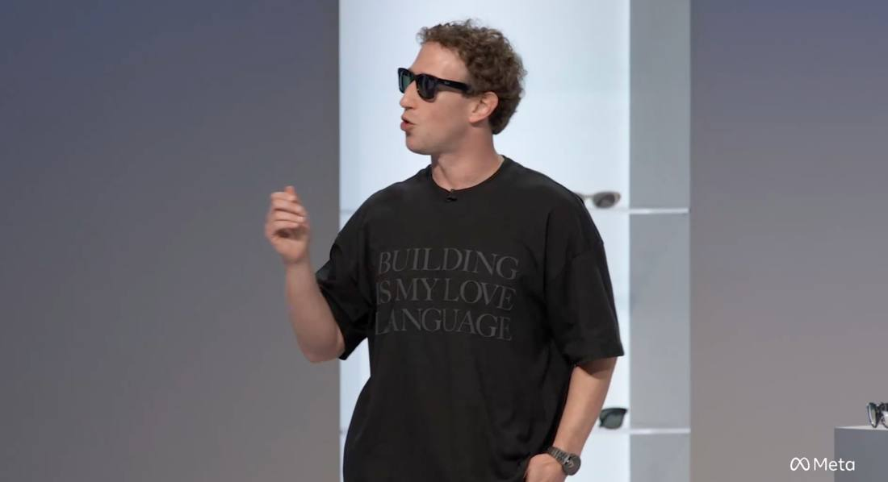
Meta Buys Conductor, the App That Runs a Team of Coding Agents at Once, and Shuts Its Cloud Down on November 20Meta acquired Conductor on November 4, 2026, Axios reported, with Meta confirming to TechCrunch and founder Charlie Holtz confirming on Conductor's site; terms were not disclosed. Conductor lets developers run several coding agents in parallel workspaces, claims more than 100,000 users, raised a $22 million Series A in March 2026, and winds down Conductor Cloud on November 20 after a November 13 read-only date. Snap Swings to a $56M Q3 Profit as Revenue Misses by $8MSnap reported third-quarter 2026 revenue of $1.722 billion, up 14% year over year but just below the roughly $1.73 billion expected, while net income swung to $56 million from a $104 million loss and adjusted EBITDA more than doubled to $383 million, above guidance; daily active users reached 495 million, and reported fourth-quarter guidance was $1.95 billion to $1.99 billion.
Snap Swings to a $56M Q3 Profit as Revenue Misses by $8MSnap reported third-quarter 2026 revenue of $1.722 billion, up 14% year over year but just below the roughly $1.73 billion expected, while net income swung to $56 million from a $104 million loss and adjusted EBITDA more than doubled to $383 million, above guidance; daily active users reached 495 million, and reported fourth-quarter guidance was $1.95 billion to $1.99 billion. AppLovin Q3: Revenue Up 55% to $2.185B as 81% of New Sales Becomes ProfitAppLovin reported third-quarter 2026 revenue of about $2.185 billion, up 55% year over year, with net income up 72% to about $1.439 billion and earnings of $4.30 per share beating expectations, as about 81% of added revenue became operating income; the company guided fourth-quarter revenue of $2.365 billion to $2.395 billion and added $3.2 billion to its buyback authorization.
AppLovin Q3: Revenue Up 55% to $2.185B as 81% of New Sales Becomes ProfitAppLovin reported third-quarter 2026 revenue of about $2.185 billion, up 55% year over year, with net income up 72% to about $1.439 billion and earnings of $4.30 per share beating expectations, as about 81% of added revenue became operating income; the company guided fourth-quarter revenue of $2.365 billion to $2.395 billion and added $3.2 billion to its buyback authorization. Arm Posts Record $1.44B Quarter as Licensing Jumps 50% and Hyperscaler Share Passes 50%Arm reported record fiscal second-quarter revenue of $1.44 billion, up 27% year over year, beating estimates as licensing revenue jumped 50% to $773 million while royalty revenue of $670 million missed. Arm said its architecture now powers more than 50% of top-hyperscaler server deployments, up from 15% in 2024, and guided third-quarter revenue of $1.54 billion.MARKETS & INDUSTRYQualcomm beat the totals and still lost the phone quarterQualcomm's fiscal fourth-quarter handset revenue fell 26% to $5.14 billion, missing estimates, even as adjusted sales of $10.44 billion beat estimates, and the company guided first-quarter fiscal 2027 revenue above estimates while stating its forecast includes no further Apple sales.Sequoia Raises ~$10 Billion and Rewinds 20 Years of ExpansionSequoia Capital announced in a Wednesday memo that it has raised roughly $10 billion in new funds while unwinding much of its 20-year expansion: closing its London office, sunsetting its Arc accelerator and Scouts program, merging its early-stage and growth teams into one, flattening its partnership to seven general partners, and ending its Monday partner meeting cycle.
Arm Posts Record $1.44B Quarter as Licensing Jumps 50% and Hyperscaler Share Passes 50%Arm reported record fiscal second-quarter revenue of $1.44 billion, up 27% year over year, beating estimates as licensing revenue jumped 50% to $773 million while royalty revenue of $670 million missed. Arm said its architecture now powers more than 50% of top-hyperscaler server deployments, up from 15% in 2024, and guided third-quarter revenue of $1.54 billion.MARKETS & INDUSTRYQualcomm beat the totals and still lost the phone quarterQualcomm's fiscal fourth-quarter handset revenue fell 26% to $5.14 billion, missing estimates, even as adjusted sales of $10.44 billion beat estimates, and the company guided first-quarter fiscal 2027 revenue above estimates while stating its forecast includes no further Apple sales.Sequoia Raises ~$10 Billion and Rewinds 20 Years of ExpansionSequoia Capital announced in a Wednesday memo that it has raised roughly $10 billion in new funds while unwinding much of its 20-year expansion: closing its London office, sunsetting its Arc accelerator and Scouts program, merging its early-stage and growth teams into one, flattening its partnership to seven general partners, and ending its Monday partner meeting cycle.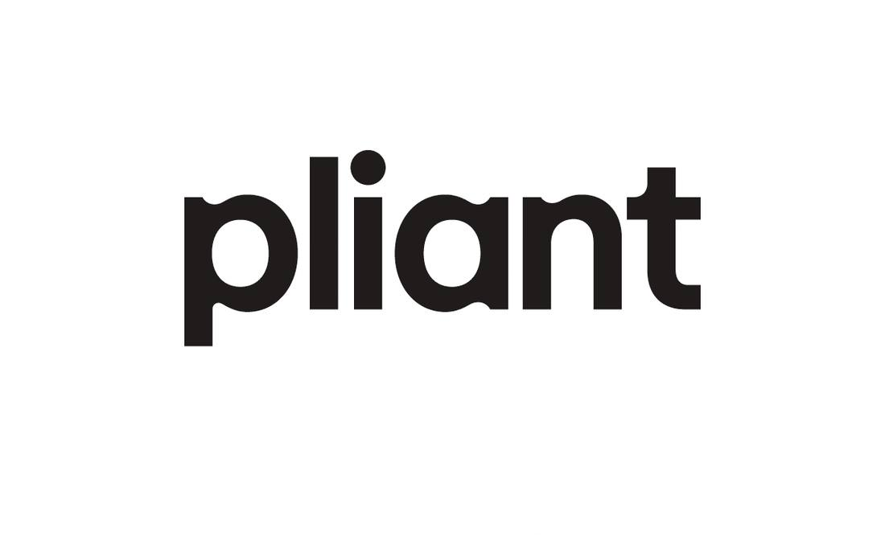
Pliant Raises $80 Million to Open Its B2B Payment Rails to AI AgentsPliant announced on November 4, 2026 an $80 million Series C funding round led by Seaya Nova and Speedinvest to open its B2B payment infrastructure to AI agents. The Berlin fintech, which says it surpassed $100 million in annual recurring revenue after three consecutive years of doubling, will expand in the United States and Canada and enter further international markets. Its platform combines commercial card issuing, payment accounts, foreign exchange, and spend management, and third-party agents connect to it via Model Context Protocol.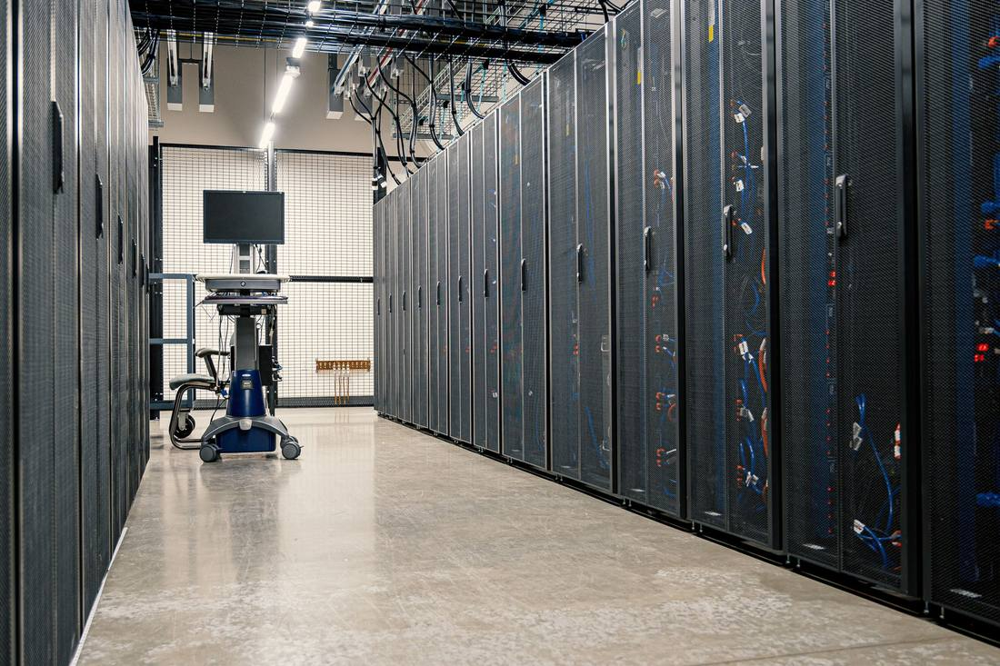
Meta's Debut Euro Bond Draws Record 53 Billion Euros in Orders, Nearly Six Times the Amount Sought (Update to Flash 193)Bloomberg News, as reported by Reuters on November 4, 2026, says Meta drew record investor orders of 53 billion euros (about 59.52 billion dollars) for its debut euro-denominated bond sale, nearly six times the up to 9 billion euros sought. The six-tranche sale, with maturities from just over four years to more than 38 years and managed by Citigroup and Morgan Stanley, is expected to price later on Wednesday. This updates flash 193: orders are not a completed sale, and final terms have not been filed.OpenAI Buys Pierre Computer and Folds Git Storage Into Codex, Taking Aim at GitHubAxios reported on November 4 that OpenAI will acquire Pierre Computer, whose Code Storage technology already runs inside Codex; OpenAI plans to fold Code Storage into Codex, terms were not disclosed, and Pierre's open-source projects will stay open source.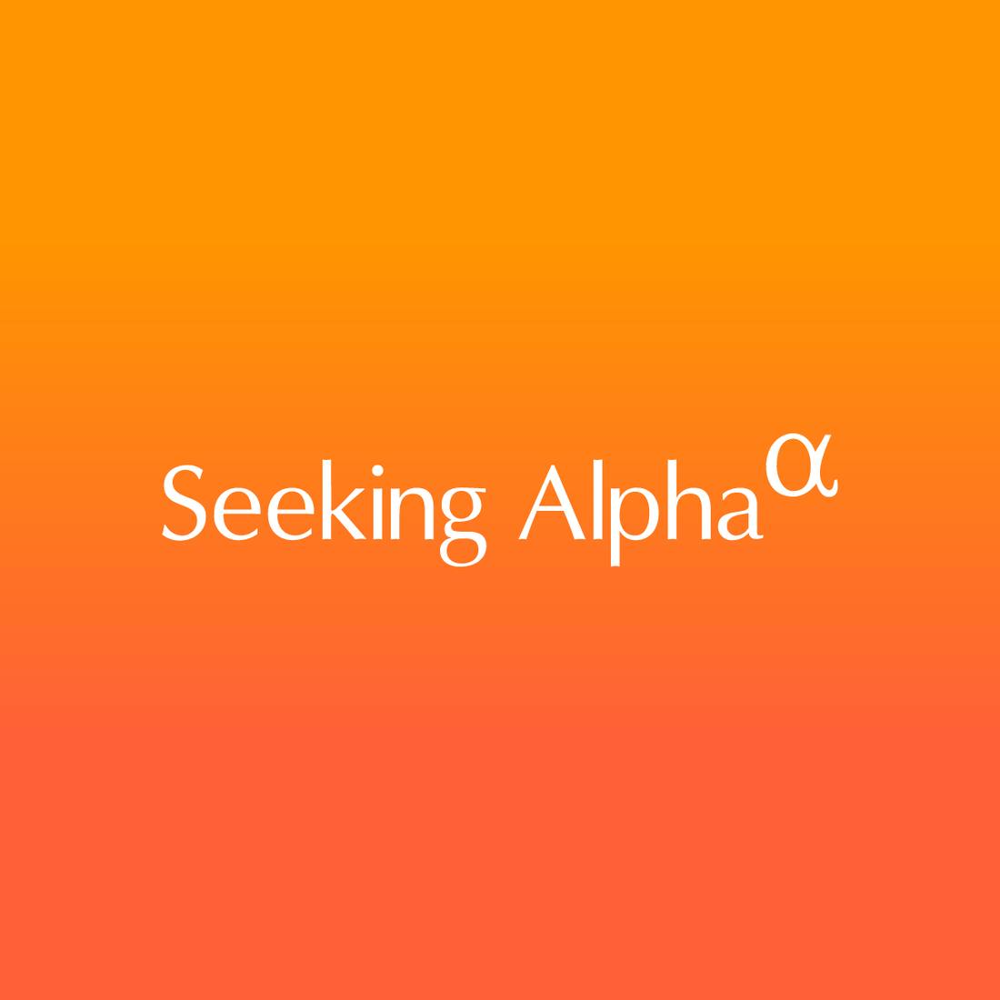
NiCE AI Revenue Jumps 46% to $392 Million as Q3 Beats Estimates and Workforce Is Cut 5%NiCE's third-quarter revenue rose 8.0% to $790.7 million and non-GAAP EPS of $2.84 beat estimates, driven by AI annual recurring revenue up 46% to $392 million. The company raised full-year EPS guidance to $11.12-11.32 while announcing a workforce reduction of approximately 5% to streamline around AI.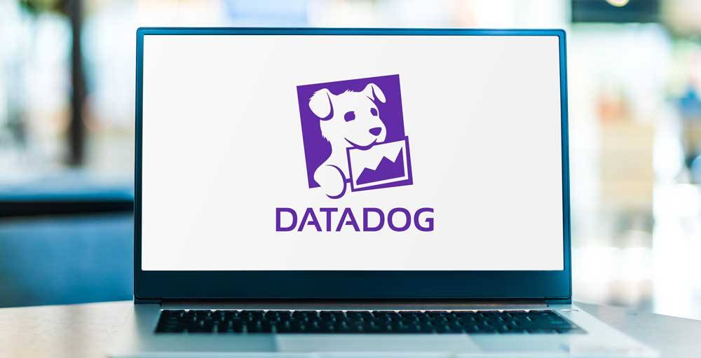
Datadog Beats on Q3 Revenue and Profit, Then Guides Flat: Shares Fall Sharply in Early TradingDatadog's third-quarter revenue rose 35% to $1.20 billion and non-GAAP EPS of $0.81 beat expectations, but fourth-quarter guidance of $1.19-1.20 billion pointed to flat sequential growth and the shares fell sharply in early trading. The release also introduced Scout 1.0, Datadog's first specialized AI investigation model.MARKETS & INDUSTRYNooks Lands a $500M Revenue-Share Commitment and Launches Its Revenue Agent PlatformAI sales-automation startup Nooks said on November 4, 2026 that it has secured a $500 million commitment from General Catalyst's Customer Value Fund to finance its sales and marketing push, structured as a share of the returns the capital helps generate rather than an equity stake. Nooks also formally launched its Revenue Agent Platform, covering tasks from first contact to renewal. The company has more than 2,000 customers, including Cursor, Notion, Replit, Glean, and HubSpot, reported net revenue retention of 135%, and said it is on track to nearly triple annual recurring revenue by year-end without disclosing the current figure. Deal terms were not disclosed. Meta Opens Books on First Euro Bond Sale: Six Tranches, Longest Tenor 38 Years (Update to Flash 190)Reuters reported on November 4, 2026 that Meta has launched its first euro-denominated bond issue. The lead-manager memo shows six euro tranches with tenors from 4 to 38 years, books already open, with Citigroup and Morgan Stanley running the book. This updates flash 190: on November 3, 2026 the dollar leg raised $15 billion across five tranches, settling November 5, while the euro portion had not yet filed final terms. Tranche sizes, coupons and spreads for the euro leg have not been published; books being open is not the same as pricing, and the $20–25 billion overall financing target remains unconfirmed.
Meta Opens Books on First Euro Bond Sale: Six Tranches, Longest Tenor 38 Years (Update to Flash 190)Reuters reported on November 4, 2026 that Meta has launched its first euro-denominated bond issue. The lead-manager memo shows six euro tranches with tenors from 4 to 38 years, books already open, with Citigroup and Morgan Stanley running the book. This updates flash 190: on November 3, 2026 the dollar leg raised $15 billion across five tranches, settling November 5, while the euro portion had not yet filed final terms. Tranche sizes, coupons and spreads for the euro leg have not been published; books being open is not the same as pricing, and the $20–25 billion overall financing target remains unconfirmed. Meta's $15 billion bond sale funds its AI build-out: spreads widen from the last round, euro leg awaits pricingMeta raised $15 billion on November 3, 2026 through a five-part US dollar bond sale, with proceeds to finance its accelerating AI infrastructure investment. The final term sheet shows the five tranches maturing from 2031 to 2056 sized at $3.25 billion, $3.25 billion, $4 billion, $1.75 billion and $2.75 billion respectively; the 10-year spread of 1.60 percentage points widened markedly from 0.90 points in the previous round, and the bonds settle on November 5. The euro portion has not yet filed final terms; the overall financing target, per CNBC citing Bloomberg, is $20 billion to $25 billion, roughly two-thirds in dollars and one-third in euros.Arista Q3 Revenue Up 58.5% to $3.66 Billion: Fastest Growth Since IPO as AI Networking Becomes the Main EngineArista reported third-quarter results after the close on 2026-11-03: revenue of $3.66 billion, up 58.5% year on year and above the $3.3 billion guidance given earlier, the fastest year-on-year growth since its IPO; GAAP EPS of $1.22 and non-GAAP EPS of $1.20 beat the expected $1.08. Fourth-quarter guidance is $3.9 billion to $4.0 billion; the earnings call gave a 2027 outlook for the first time, with revenue of about $18.5 billion and AI networking revenue potentially doubling to about $7 billion.
Meta's $15 billion bond sale funds its AI build-out: spreads widen from the last round, euro leg awaits pricingMeta raised $15 billion on November 3, 2026 through a five-part US dollar bond sale, with proceeds to finance its accelerating AI infrastructure investment. The final term sheet shows the five tranches maturing from 2031 to 2056 sized at $3.25 billion, $3.25 billion, $4 billion, $1.75 billion and $2.75 billion respectively; the 10-year spread of 1.60 percentage points widened markedly from 0.90 points in the previous round, and the bonds settle on November 5. The euro portion has not yet filed final terms; the overall financing target, per CNBC citing Bloomberg, is $20 billion to $25 billion, roughly two-thirds in dollars and one-third in euros.Arista Q3 Revenue Up 58.5% to $3.66 Billion: Fastest Growth Since IPO as AI Networking Becomes the Main EngineArista reported third-quarter results after the close on 2026-11-03: revenue of $3.66 billion, up 58.5% year on year and above the $3.3 billion guidance given earlier, the fastest year-on-year growth since its IPO; GAAP EPS of $1.22 and non-GAAP EPS of $1.20 beat the expected $1.08. Fourth-quarter guidance is $3.9 billion to $4.0 billion; the earnings call gave a 2027 outlook for the first time, with revenue of about $18.5 billion and AI networking revenue potentially doubling to about $7 billion.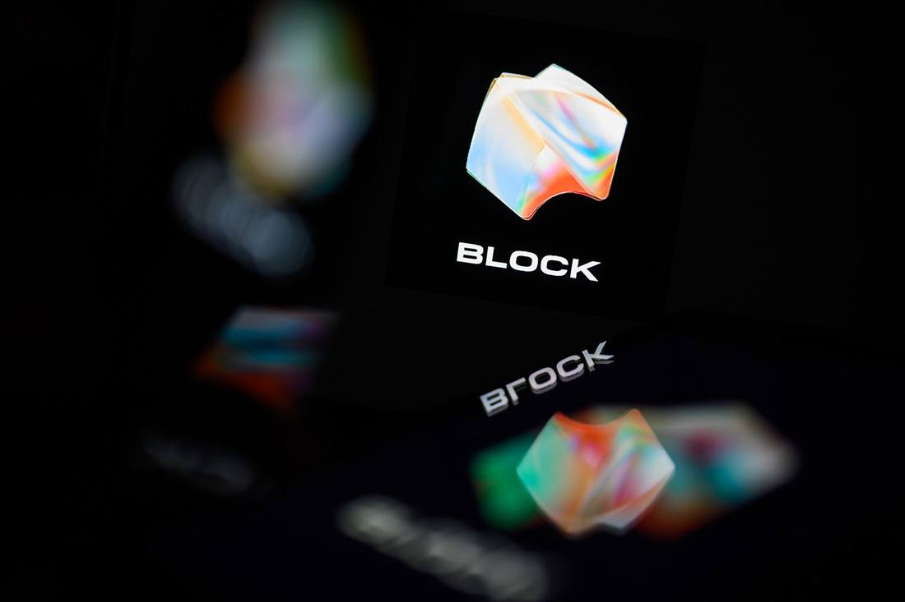
Block Q3 Gross Profit Up 22% to $3.24 Billion: Cash App Leads, Full-Year Guidance Raised, First AI Tool Revenue PreviewedBlock reported third-quarter results after the close on 2026-11-03: gross profit of $3.24 billion, up 22% year on year and above the $3.13 billion guidance given in August; Cash App gross profit rose 27% to $2.07 billion and Square gross profit rose 14% to $1.16 billion; adjusted EPS of $1.13 beat the expected $1.03. The company raised full-year gross profit guidance to $12.626 billion and previewed that it will earn revenue directly from AI tools for the first time in the fourth quarter.MARKETS & INDUSTRYVaronis Q3: SaaS Near 98% of Revenue, ARR at $774.6 Million, No Guidance While Acquisition Is PendingVaronis's third-quarter total revenue was $189.5 million, up 17.3% year on year and above expectations. SaaS revenue is close to 98% of the total, and SaaS ARR at period end reached $774.6 million, up 42%. With the Proofpoint acquisition pending, the company provides no guidance and holds no earnings call.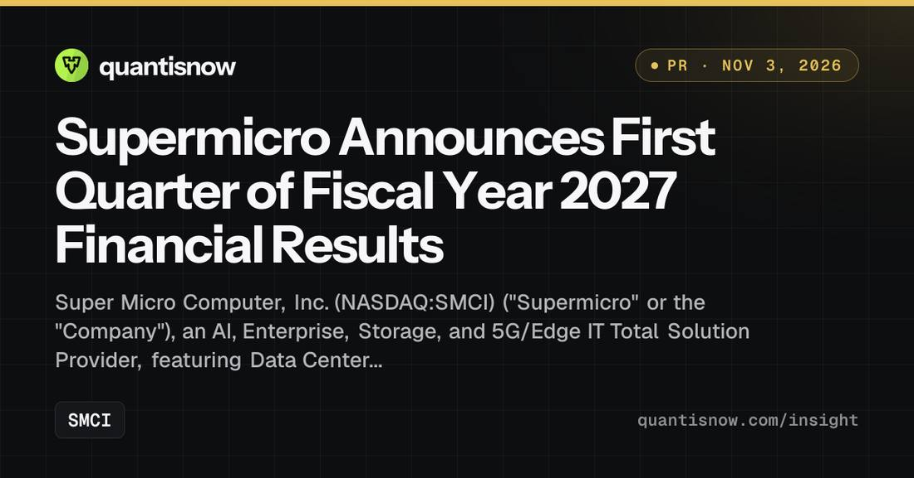
Supermicro Quarterly Revenue Nears $20 Billion: Up Nearly Fourfold, Full-Year Guidance Raised to Start at $72 BillionSupermicro's fiscal 2027 first-quarter net sales reached $19.95 billion, roughly four times the year-earlier level and above market expectations. The company raised full-year net sales guidance to $72–82 billion, with AI server demand still the core driver.MARKETS & INDUSTRYAMD Posts Record Q3 Revenue as Data Center Nearly Doubles to Over 60% of SalesAMD's third-quarter 2026 revenue was $13.377 billion, up 45% year on year, a record that beat market expectations; data center revenue of $8.5 billion rose 97%, also a record, and became the core pillar of the results.Reuters: OpenAI Staff Warned of Internal Security Lapses for Years; a Quarter of Production Engineers Shifted to Security in AugustReuters reported on November 3, 2026 that OpenAI employees had warned senior leadership and the board about internal security problems before ChatGPT's release, and that, according to five people familiar with the matter, management placed greater weight on competitive speed against Google and Anthropic. The two gaps named in the report are broad access to the monorepo and the lack of regular security reviews of research sandboxes. In August 2026, product development executive Thibault Sottiaux moved roughly a quarter of production engineers to improving security infrastructure. OpenAI responded that it is among the most targeted organizations in the world, that its most sensitive work sits in separate repositories under strict access controls, that the monorepo contains no model weights, that internal tools are now reviewed regularly, and that after Reuters sought comment it announced plans for its next internal security sprint.Inference Demand Outruns Compute: fal Raises a $1.3 Billion Series F, Doubling Its Valuation to $16 Billion in Six Monthsfal announced its Series F on 2026-11-03: $1.3 billion led by Bessemer Venture Partners at a $16 billion valuation, double the $8 billion of April 2026; the earlier Sequoia-led Series E and the F round total $1.65 billion, with NVIDIA a strategic investor in the F round and Sound Ventures and T. Rowe Price participating. Bloomberg, relayed by TechCrunch, reported fal's annualized revenue passed $800 million earlier this year. The company says the funds will expand inference compute and grow the team, serving 2027 research and new products. CrowdStrike Signs Two Acquisitions Back to Back, Completing the Agent Security Puzzle (Update to Issue 155)CrowdStrike announced at Fal.Con Europe on 2026-11-03 that it has signed definitive agreements to acquire Fiddler AI and Dreadnode, both expected to close in the fourth quarter of fiscal 2027, with prices not officially disclosed; Fiddler will become Falcon Observe and Dreadnode will become automated AI security testing, covering pre-deployment evaluation and post-launch behavioral explanation respectively, forming a complete chain from testing to shutdown with the AI Kill Switch released the same day. The Wall Street Journal reported a combined roughly $495 million for the two deals, a figure the company has not confirmed.Roadshow Goes Ahead, Valuation Cut First as Anthropic's Listing Hits a Cold WindAnthropic's IPO roadshow starts next week as planned, targeting a listing in the week of November 16. But prospective buyers are discussing a valuation in the $1.1 trillion to $1.3 trillion range, far below the $2 trillion discussed in early October.
CrowdStrike Signs Two Acquisitions Back to Back, Completing the Agent Security Puzzle (Update to Issue 155)CrowdStrike announced at Fal.Con Europe on 2026-11-03 that it has signed definitive agreements to acquire Fiddler AI and Dreadnode, both expected to close in the fourth quarter of fiscal 2027, with prices not officially disclosed; Fiddler will become Falcon Observe and Dreadnode will become automated AI security testing, covering pre-deployment evaluation and post-launch behavioral explanation respectively, forming a complete chain from testing to shutdown with the AI Kill Switch released the same day. The Wall Street Journal reported a combined roughly $495 million for the two deals, a figure the company has not confirmed.Roadshow Goes Ahead, Valuation Cut First as Anthropic's Listing Hits a Cold WindAnthropic's IPO roadshow starts next week as planned, targeting a listing in the week of November 16. But prospective buyers are discussing a valuation in the $1.1 trillion to $1.3 trillion range, far below the $2 trillion discussed in early October.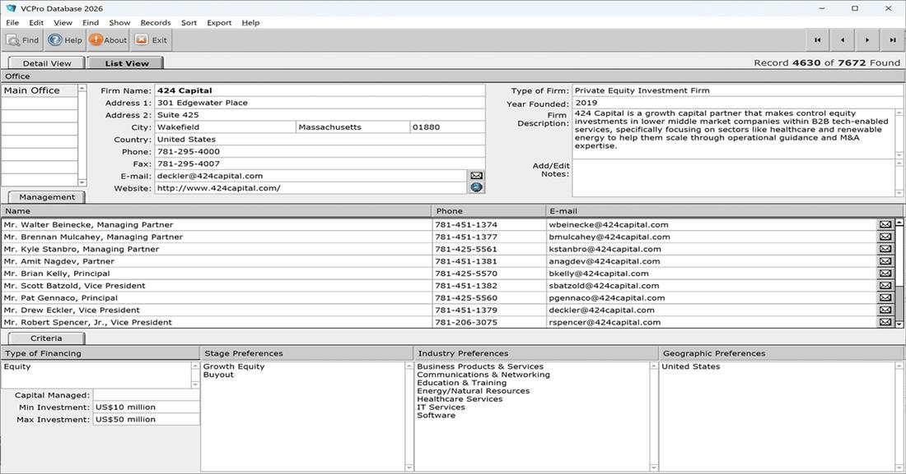
Robots by the Hour: Tutor Raises a $75 Million Series B Led by a16zTutor Intelligence announced on November 2 a $75 million Series B led by a16z, with USV and Neo participating, taking total funding to $117 million. The dual-arm semi-humanoid Sonny and the wheeled manipulator Cassie are rented by the hour or by the piece, with no upfront payment and no long-term contract, targeting more than 1,000 robots signed by the end of 2027. The robots are not yet fully autonomous; remote operators still take part in directing them. Steal First, Then Let AI Do the Valuation: Talos Discloses VOLTA Malware That Ranks Victims by Monetization ValueCisco Talos disclosed the VOLTA-AUTODOXER malware on October 31: after stealing browser credentials, payment cards, crypto wallet seed phrases and platform sessions, it enriches victim profiles with the stolen sessions, then calls Claude Opus 4.6 via OpenRouter to rank victims by monetization value (falling back to Kimi K2 and Gemini 2.5 Flash on refusal), exfiltrating via Telegram in three stages.
Steal First, Then Let AI Do the Valuation: Talos Discloses VOLTA Malware That Ranks Victims by Monetization ValueCisco Talos disclosed the VOLTA-AUTODOXER malware on October 31: after stealing browser credentials, payment cards, crypto wallet seed phrases and platform sessions, it enriches victim profiles with the stolen sessions, then calls Claude Opus 4.6 via OpenRouter to rank victims by monetization value (falling back to Kimi K2 and Gemini 2.5 Flash on refusal), exfiltrating via Telegram in three stages. $11 Billion Lands First as OpenAI's Valuation Settles at $1.25 TrillionBloomberg reported on November 6 that the first roughly $11 billion of OpenAI's funding round has landed at a $1.25 trillion valuation, with the round's overall target cut from $30 billion to about $20 billion.$120 Million for a Company That Takes the Night Shift for EngineersTraversal announced a $120 million Series B on November 3 at a $1 billion valuation, co-led by Kleiner Perkins, Redpoint and Khosla. The company builds AI site reliability engineering and says annualized revenue grew 9x this year.Anthropic's Amended Filing Discloses $895.4 Billion in Compute Commitments (Update to Issue 71)Anthropic's amended listing filing fills in what the original left blank: purchase commitments and leases totalling about $895.4 billion, almost all for compute and infrastructure, with Q3 revenue of about $17 billion, though the offering price and listing date are still unset.
$11 Billion Lands First as OpenAI's Valuation Settles at $1.25 TrillionBloomberg reported on November 6 that the first roughly $11 billion of OpenAI's funding round has landed at a $1.25 trillion valuation, with the round's overall target cut from $30 billion to about $20 billion.$120 Million for a Company That Takes the Night Shift for EngineersTraversal announced a $120 million Series B on November 3 at a $1 billion valuation, co-led by Kleiner Perkins, Redpoint and Khosla. The company builds AI site reliability engineering and says annualized revenue grew 9x this year.Anthropic's Amended Filing Discloses $895.4 Billion in Compute Commitments (Update to Issue 71)Anthropic's amended listing filing fills in what the original left blank: purchase commitments and leases totalling about $895.4 billion, almost all for compute and infrastructure, with Q3 revenue of about $17 billion, though the offering price and listing date are still unset.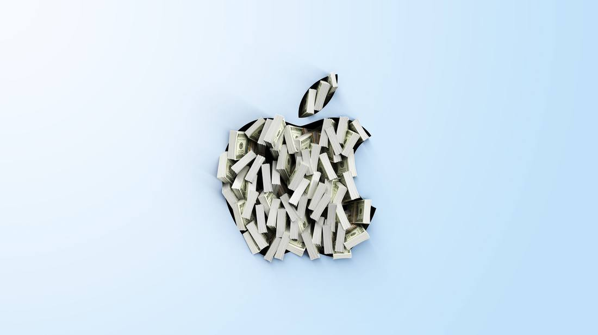
$114.5 Billion in Revenue Is Not Enough: Memory Inflation Drags Apple's MarginsApple reported fiscal fourth-quarter results on November 2, with revenue of $114.5 billion, up 12% year on year, and net income of $30.7 billion. New CEO Ternus called the memory pricing environment unprecedented, and holiday-quarter gross margin guidance fell to 45% to 46%.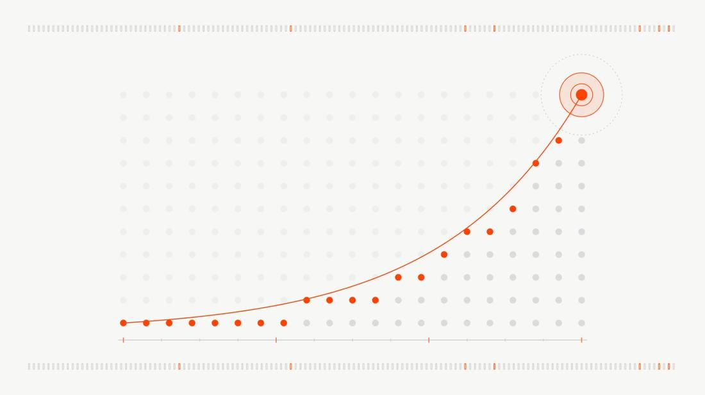
$100 Million in Annualized Revenue in 18 Months, and Another $350 Million RaisedApplied Compute officially announced that it reached a $100 million annualized revenue run rate in under 18 months and completed a new $350 million funding round at a $3.25 billion valuation, led by Elad Gil. $2.7 Billion: Salesforce Buys Another Phone AI CompanySalesforce signed a definitive agreement on November 2 to acquire voice AI company Cresta. The official announcement does not disclose the price; media citing people familiar with the matter put it at about $2.7 billion, and the deal is expected to close in the first quarter of fiscal 2028.$115 Billion, All Stock: Marvell Buys Optics Giant LumentumMarvell and Lumentum announced an all-stock merger on November 2, with a reference enterprise value of $115 billion. Lumentum shareholders will receive 4.5 Marvell shares for each share held and will own about 33% after closing, which targets the first half of 2028.
$2.7 Billion: Salesforce Buys Another Phone AI CompanySalesforce signed a definitive agreement on November 2 to acquire voice AI company Cresta. The official announcement does not disclose the price; media citing people familiar with the matter put it at about $2.7 billion, and the deal is expected to close in the first quarter of fiscal 2028.$115 Billion, All Stock: Marvell Buys Optics Giant LumentumMarvell and Lumentum announced an all-stock merger on November 2, with a reference enterprise value of $115 billion. Lumentum shareholders will receive 4.5 Marvell shares for each share held and will own about 33% after closing, which targets the first half of 2028. A Fifth Move: Harvey Buys the Sales AI TeamOn October 29, 2026, Harvey announced the acquisition of AI sales execution platform Aida, with the founding team joining product and engineering. It is Harvey's fifth acquisition this year; the deal value was not disclosed.
A Fifth Move: Harvey Buys the Sales AI TeamOn October 29, 2026, Harvey announced the acquisition of AI sales execution platform Aida, with the founding team joining product and engineering. It is Harvey's fifth acquisition this year; the deal value was not disclosed.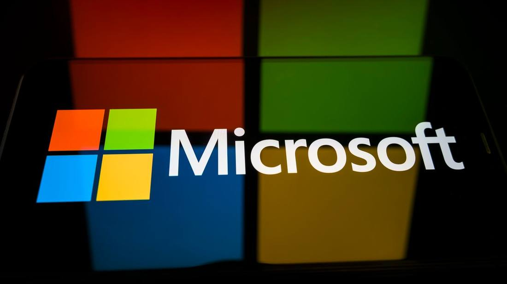
A Voluntary Exit Offer to 60,000: Microsoft Makes Room for AI InfrastructureOn October 26, 2026, Microsoft extended voluntary departure offers to about 60,000 employees, roughly 27% of its global workforce, against the backdrop of US$175 billion in AI infrastructure spending. Employees decide by early December and depart on December 31.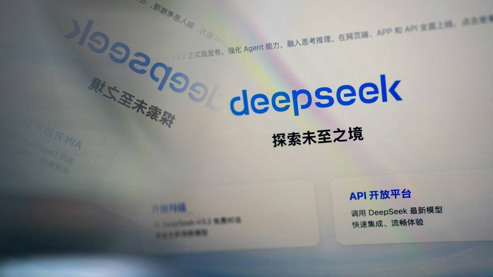
A RMB 105.5 Billion Second Round Lifts DeepSeek's State Share to 27%According to The Information on October 30, 2026, DeepSeek's second round raised about RMB 105.5 billion, with nearly 30 investors participating and the state-owned share rising from about 2% in the first round to about 27%.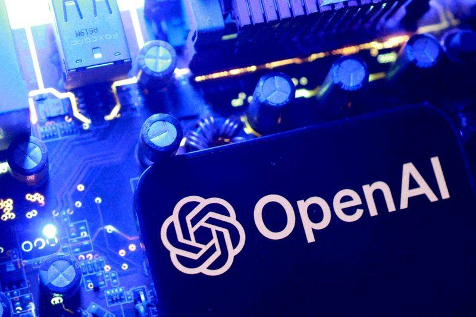
Target Cut by $10 Billion: OpenAI's Fundraise Meets the Sell-OffAccording to the Financial Times on October 30, 2026, OpenAI cut this round's funding target from $30 billion to about $20 billion and its target valuation from $1.4 trillion to $1.25 trillion.For $375 Million, Salesforce Buys a Military Logistics AI CompanyOn October 30, 2026, Salesforce agreed to acquire Rune Technologies for $375 million in cash and stock, installing military logistics AI into its Missionforce defense business. Microsoft Made $10 Billion From OpenAI in a Single QuarterMicrosoft's quarterly filing, disclosed on October 29, shows that in the quarter ended September 30, revenue from OpenAI commercial arrangements reached $10 billion, about 11% of total revenue for the quarter.
Microsoft Made $10 Billion From OpenAI in a Single QuarterMicrosoft's quarterly filing, disclosed on October 29, shows that in the quarter ended September 30, revenue from OpenAI commercial arrangements reached $10 billion, about 11% of total revenue for the quarter. A $130 Million Seed Round Betting on a Hardware Design ModelOn October 29, The Information reported that Dulo, co-founded by Sebastian Thrun, had closed a $130 million seed round to build a foundation model for hardware design.Upwind Turned Down a $4 Billion Acquisition, Then Raised $400 MillionOn October 28, Upwind closed a $400 million Series C at a $3.8 billion valuation. Shortly before, media reported that Datadog had offered roughly $4 billion to buy the company; it chose to stay independent.A State Takes an Equity Stake: Cohere Targets C$7 BillionCohere announced the first closing of its Series E, targeting up to C$7 billion at a full-subscription valuation of C$35.7 billion, with the Canadian government committing up to C$1.6 billion and taking an equity stake.
A $130 Million Seed Round Betting on a Hardware Design ModelOn October 29, The Information reported that Dulo, co-founded by Sebastian Thrun, had closed a $130 million seed round to build a foundation model for hardware design.Upwind Turned Down a $4 Billion Acquisition, Then Raised $400 MillionOn October 28, Upwind closed a $400 million Series C at a $3.8 billion valuation. Shortly before, media reported that Datadog had offered roughly $4 billion to buy the company; it chose to stay independent.A State Takes an Equity Stake: Cohere Targets C$7 BillionCohere announced the first closing of its Series E, targeting up to C$7 billion at a full-subscription valuation of C$35.7 billion, with the Canadian government committing up to C$1.6 billion and taking an equity stake. After Rejecting an $800 Million Buyout, the Chip Valuation QuadrupledSouth Korean inference chip company FuriosaAI closed a $620 million Series D at a $2.9 billion valuation, about four times the previous round, with the National Growth Fund contributing $280 million; RNGD is in mass production.
After Rejecting an $800 Million Buyout, the Chip Valuation QuadrupledSouth Korean inference chip company FuriosaAI closed a $620 million Series D at a $2.9 billion valuation, about four times the previous round, with the National Growth Fund contributing $280 million; RNGD is in mass production. A $100 Million Customer Order Buys an $800 Million ValuationGeneral Compute raised a $100 million Series A at an $800 million post-money valuation; a large customer contract worth $100 million in annual recurring revenue arrived before the funding.
A $100 Million Customer Order Buys an $800 Million ValuationGeneral Compute raised a $100 million Series A at an $800 million post-money valuation; a large customer contract worth $100 million in annual recurring revenue arrived before the funding.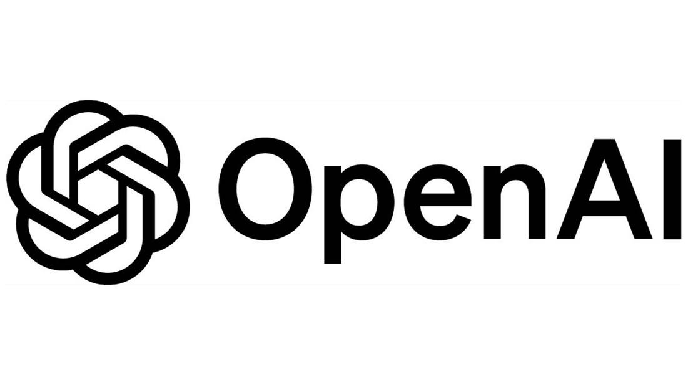
Rival Turned Supplier: OpenAI to Buy Google's ChipsReuters relayed The Information: OpenAI plans to buy Google AI chips, price undisclosed; cooperation between the rivals is extending from cloud services to chip procurement.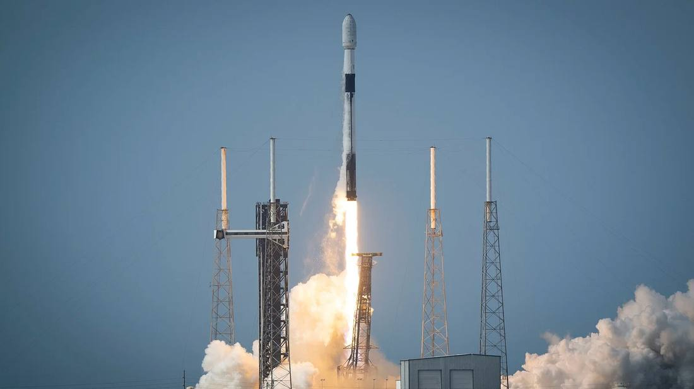
$40 Billion, Not Through Bonds but Through LeasingSpaceX announced a GPU master finance lease of about $40 billion on October 26: Apollo entities will buy Nvidia Vera Rubin chips and lease them on, with deliveries from the first half of 2027.Anthropic's IPO Filing Hides an $80.7 Billion LossOn October 26, Anthropic filed for its listing: first-half revenue of $16.3 billion and a net loss of $80.7 billion. About $72 billion of the loss is a non-cash charge; the real pressure comes from the compute bill and long-term commitments above $600 billion.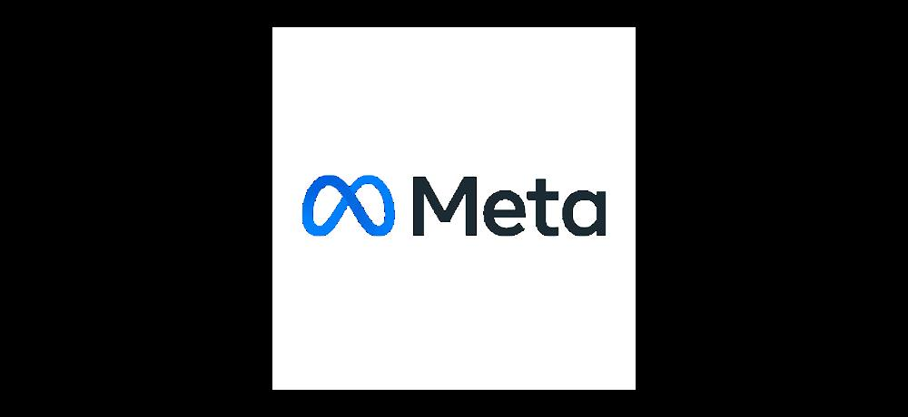
Meta Plans to Raise Another $95 Billion for AIOn October 26, Meta announced an offering programme of about $35 billion and proposed a further $60 billion share sale plan. The compute bill came first, the funding plan after, and the pace of AI infrastructure spending shows no sign of slowing.Kling Valued at 122.8 Billion Yuan: The Son Nearly Catches the FatherThe October 6 rumour: Kling AI has selected CICC, Goldman Sachs and UBS, targeting a Hong Kong listing in early 2027 raising at least $1 billion. In July it raised $2.8 billion at an $18 billion valuation — about 122.8 billion yuan, roughly level with Kuaishou's own market value. Why is a two-year-old AI business worth almost as much as its parent?MARKETS & INDUSTRYRecord Revenue. First Loss in Its History.JetBrains' fiscal 2025 revenue hit a record 16.008 billion koruna, up 6.3%, yet it posted its first annual net loss on record: 315 million koruna. A 1.516 billion koruna FX loss was the largest single item, but operating profit also plunged 63.2%, staff costs rose 34.2%, and investing cash flow fell from -$83 million to -$469 million. Across 583 points and 537 comments, Hacker News asked one question: where did the money go?Raised $4.7 Billion. First Product, Two Years Later.On October 5, US startup Reflection AI released Beam, its first public model in more than two years: 501 billion total parameters, 23 billion active per token, claiming parity with Zhipu's GLM-5.2 at one-third to one-quarter of the inference compute. Valued at $25 billion after raising $4.7 billion, its first delivered assignment concedes it cannot beat Chinese models — but is far cheaper.Lambda's $4 Billion Raise, Paid for by AnthropicLambda is reportedly raising up to $4 billion at a $14.5 billion pre-money valuation, co-led by Blackstone and Coatue, ahead of a 2027 IPO. Behind a backlog that tripled from $15 billion to $50 billion in three months sits a single $35 billion compute commitment from Anthropic — this round is not a bet on compute scarcity, but on Anthropic's ability to pay.